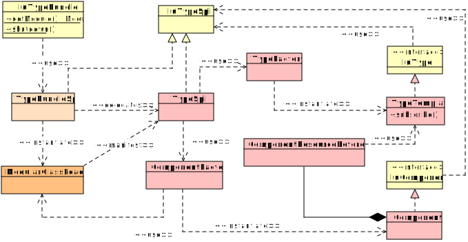

Module iu.util.type.impl
Package iu.type
package iu.type
Type Introspection Implementation Module.

-
ClassDescriptionAnnotatedElementBase<E extends AnnotatedElement>Implements the facade view of an
AnnotatedElement.Bridge utility for adapting annotations defined in one module to a different module with an isolated and potentially different version of the same annotation library.Reads entries from aJarInputStreamfor validating and initializing aComponentArchive.Provides access to context-compatible versions of context-sensitive classes.Component ImplementationReads a component archive and provides attributes necessary to realizing the component's instance.Represents an entry in the component archive.Creates instances ofComponentforTypeSpi.createComponent(ClassLoader, ModuleLayer, Consumer, InputStream, InputStream...).AutoCloseableversion ofComponentModuleFinder.Implementation ofIuResource;Implementation ofIuResource;Writes entries to aComponent's dedicated temporary path files.Implementation ofIuComponentVersion.Facade implementation forIuConstructor.DeclaredAttribute<D,T> Refines internal attribute return types.DeclaredElementBase<D,E extends AnnotatedElement> Implements the facade view of anGenericDeclaration.Provides initialization behavior for type facade elements.ExecutableBase<D,R, E extends Executable> Facade implementation for anExecutable.FieldFacade<D,T> Facade implementation forIuField.Class loader forlegacycomponents.MethodFacade<D,R> Facade implementation forIuMethod.Facade implementation ofIuParameter.Implements the facade view of anIuParameterizedElementas a delegating mix-in.Implementation replacement forIuParameterizedElementto enforce all type parameters to be implemented byTypeFacade.Scans a path entry: either ajarfile or filesystem directory, for non-folder resources.Handles remote bridge semantics forAnnotationBridge.PropertyFacade<D,T> Facade implementation ofIuProperty.TypeFacade<D,T> Facade implementation ofIuType.Provides fully formed instances ofTypeTemplatetoTypeSpi.resolveType(Type).TypeReference<T,R extends ElementBase> Implementation ofIuTypeReference.Service provider implementation.TypeTemplate<D,T> Represents the internal structure of aTypeFacade.Miscellaneous type introspection utilities.